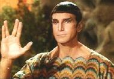

|
Surak
|
|
|
") |
|
 |
Padre della filosofia vulcaniana
della logica, che nel
350 circa, dopo una tremenda
guerra, getta le basi della moderna civiltà
vulcaniana postulando un modello di
comportamento basato su un controllo ferreo e una repressione decisa delle
emozioni, avviando il periodo che i
Vulcaniani chiamano «Epoca del Risveglio» (The Savage Courtain,
Gambit).
Nei secoli successivi alla morte di Surak i suoi scritti vanno persi e nella
società vulcaniana si creano vari
gruppi di pensiero, ognuno dei quali ritene di seguire il vero pensiero di Surak.
Uno di questi gruppi, guidato da Syren, si dà il nome di Syrenniti e nel
2154 è costretto a rifugiarsi
a causa delle repressioni dell'Alto Comando. Grazie all'intervento di Archer, a
cui Syren trasmette il katra di Surak, viene ritrovato il
Kir'Shara e il prezioso
manufatto viene trasferito nella capitale di
Vulcano, permettendo agli
studiosi di accedere direttamente agli scritti di Surak (The
Forge, Awakening, Kir'Shara).
Secondo la leggenda, Surak sarebbe morto sul monte Seleya (Awakening).
Nel
2269 gli
Excalbiani creano una replica di Surak nell'intenzione di studiare i
concetti di bene e male degli umanoidi (The Savage Courtain).